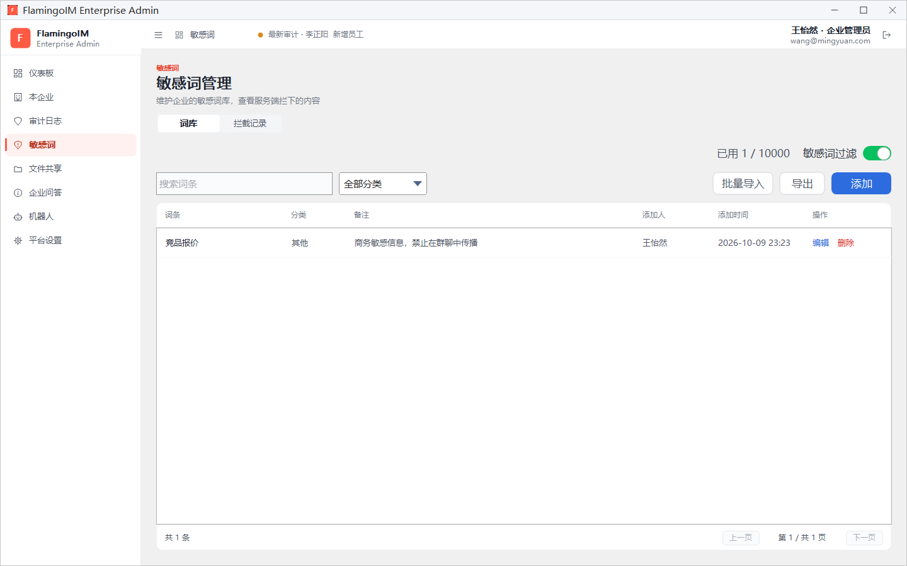
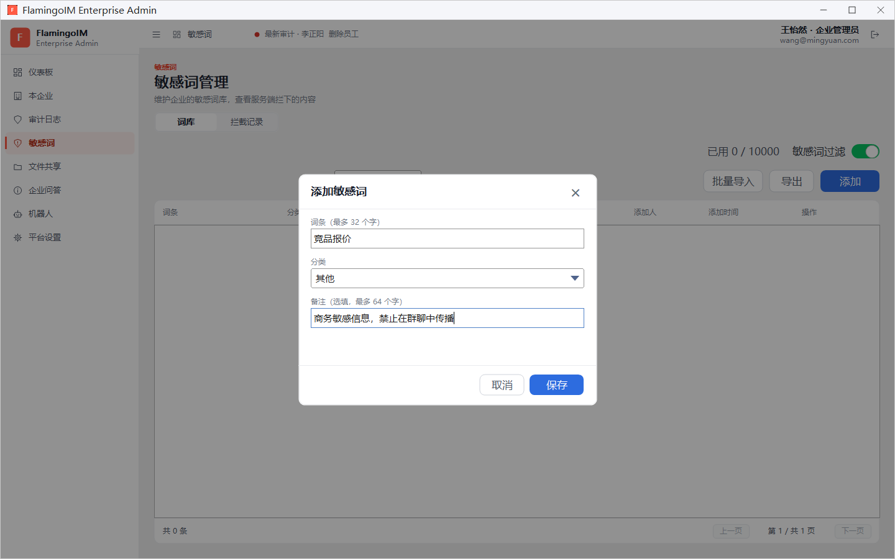
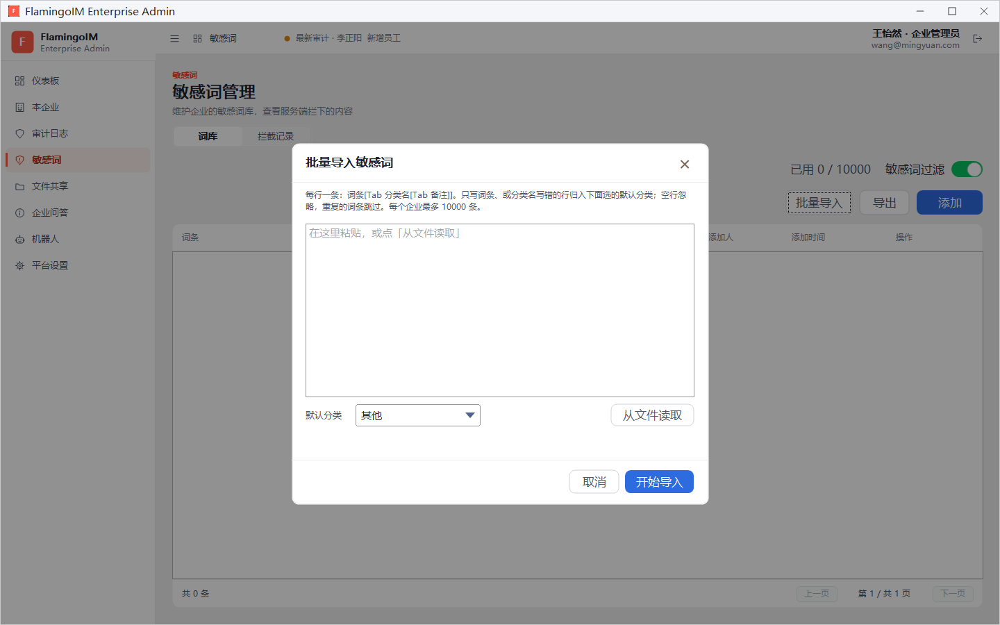
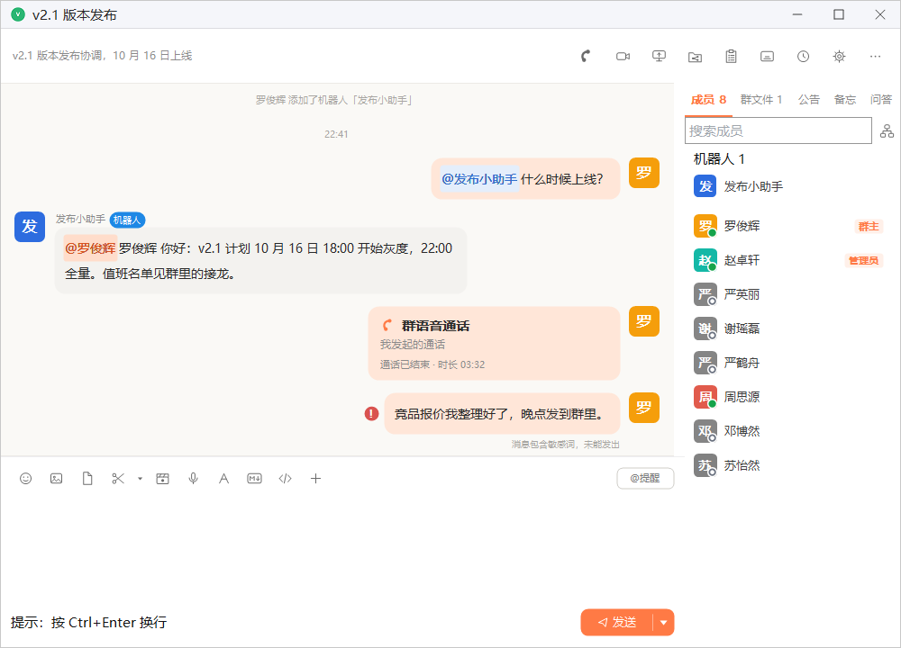
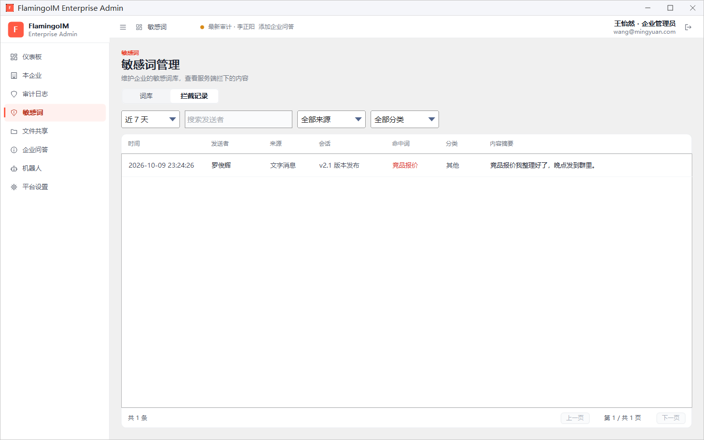

敏感词
企业可以维护一份敏感词库。员工发送的消息、修改的资料等内容一旦包含词库里的词，就会被服务器拦下，不会发出去。本章介绍如何添加和批量导入敏感词、暂停过滤，以及查看被拦截的记录。
- 适用：企业管理员
- 位置：左侧导航「敏感词」
- 上限：每个企业最多 10000 条敏感词
敏感词管理页面
点左侧导航的 敏感词，进入「敏感词管理」页面。页面分为 词库 和 拦截记录 两个页签，默认显示词库：

- 右上角：已用 1 / 10000 表示词库已有多少条、最多能放多少条；右侧的 敏感词过滤 是总开关，见本章「暂停与恢复过滤」。
- 工具栏：搜索词条 框和 全部分类 下拉框用于筛选；批量导入、导出、添加 三个按钮分别见下文。
- 列表：词条、分类、备注、添加人、添加时间，每行末尾有 编辑 和 删除。
添加敏感词
点工具栏的 添加，打开「添加敏感词」对话框：

- 在 词条 中输入敏感词，最多 32 个字。匹配时忽略大小写、全角半角、空白与符号，所以「竞品报价」也能拦住「竞品 报价」这类写法。
- 在 分类 中选择一个分类：违法违规、色情低俗、攻击辱骂、商业机密、广告引流或其他。分类用于在列表和拦截记录中筛选。
- 按需填写 备注（选填，最多 64 个字），例如来源或添加原因。
- 点 保存，敏感词立即生效。
点某一行的 编辑 会打开同样的「编辑敏感词」对话框。点 删除 并确认后，删除立即生效，含有这个词的内容将不再被拦截。
批量导入与导出
敏感词较多时，可以一次导入。点工具栏的 批量导入：

- 在文本框中粘贴要导入的内容，或点 从文件读取 选择一个文本文件。每行一条，格式是「词条[Tab 分类名[Tab 备注]]」，即词条后面可以用制表符隔开再写分类名和备注，也可以只写词条。
- 在 默认分类 中选择一个分类。只写了词条、或分类名写错的行都会归入这个分类。
- 点 开始导入。空行会被忽略，与已有词条重复的行会被跳过。
导入完成后对话框里显示结果，例如「导入完成：成功 12 条，跳过 2 条。」，并逐行列出被跳过的行及原因。
下面是三种写法的示例（Tab 表示一个制表符）：
| 一行的内容 | 导入结果 |
|---|---|
内部报价单 | 只写词条，分类取「默认分类」 |
竞品报价 Tab 商业机密 | 词条与分类 |
加微信 Tab 广告引流 Tab 群聊引流常用说法 | 词条、分类与备注 |
点工具栏的 导出，可以把整个词库保存为文本文件（默认文件名为「敏感词词库-企业名.txt」）。导出文件的格式与导入格式相同，可以留作备份，也可以导入到其他企业。词库为空时会提示「词库为空，没有可导出的词条」。
暂停与恢复过滤
页面右上角的 敏感词过滤 开关控制本企业是否检查敏感词。关闭时会先弹出确认框：暂停后，本企业的消息、资料、群资料与文件名都不再检查敏感词，直到重新打开。词库本身保留，重新打开开关即可恢复拦截。
员工这边会看到什么
员工发送含有敏感词的消息时，消息会被服务器拦下，不会送达对方。发送者的客户端在这条消息左侧显示红色感叹号，下方提示「消息包含敏感词，未能发出」：

拦截的范围不只是聊天消息。拦截记录的 全部来源 下拉框列出了所有会检查敏感词的地方：文字消息、转发、文件名、卡片与接龙、个人资料、群资料、群名片、加群申请、禁言原因、文件夹名、自助注册、群公告、屏幕共享、群备忘、文件共享、云端录像、群问答、帖子、帖子留言、机器人配置和机器人外部内容。
查看拦截记录
切到 拦截记录 页签，可以查看服务器拦下了哪些内容：

- 在第一个下拉框中选择时间范围：近 7 天、近 30 天或近 180 天。
- 按需在 搜索发送者 框中输入发送者的名字。
- 按需在 全部来源 和 全部分类 中筛选。
列表各列依次是 时间、发送者、来源（如文字消息）、会话（单聊对象或群名）、命中词、分类 和 内容摘要。内容摘要只截取命中位置前后的一小段文字，较长时可以把鼠标停在上面查看全文。